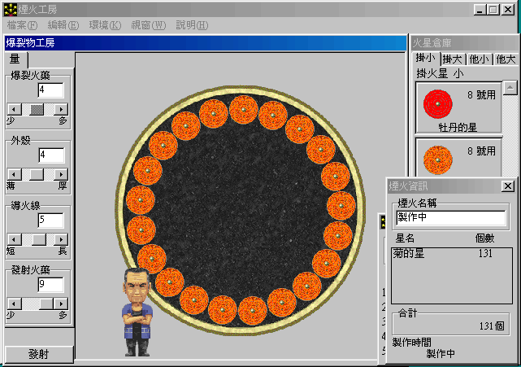
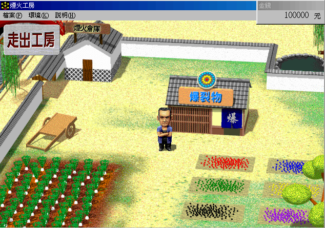

名稱：煙火挑戰者／花火職人 (中文版) 簡介：日本魔法株式會社1996年出品的花火職人模擬遊戲，2000年由華義中文化並代理發行 [待補]。

保護：光碟+磁片，破解碼（放入光碟才有背景音樂）： Hanabi.exe 74 04 B3 01 EB 06 90 90 -- -- -- -- 3C 8F 4C 00 89 02 A1 3C 8F 4C 00 81 38 87 D6 12 00 73 1D 6A 00 94 8E -- -- 8B 12 -- -- -- -- -- -- C2 -- -- -- -- 89 10 EB 1B 限制：遊戲在XP以上系統執行時，對話框會變成黑底看不見文字，只能在Win9x系統上執行。 備註：執行時，若顯示速度很慢卡頓，請執行dxdiag將DirectDraw停用。